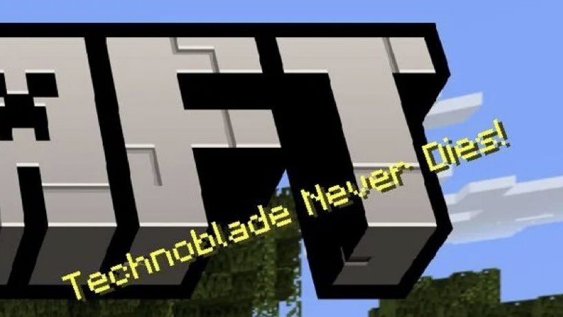

Personal Life
Alexander was born on June 1, 1999, and lived in San Francisco, California. He resided in California for most of his life, attending and graduating high school in the state. Techno has made multiple references in his videos about having ADHD. We can also see him talking about it here: Hypixel Forum & TeamFortress.TV forum
Techno never did an official face reveal but his face has been visible in his 100,000 subscriber special video and Cooking with Technoblade video.
We can also see his face at the end of his playing Minecraft hardcore with a steering wheel stream.
In one of the potato war videos, Techno states that he’s an atheist.
Family
He had three younger sisters and a brother named Chris. Technoblade had made a reference to a younger brother, although it is unclear if he was talking about Chris or if he had another brother. He also had a small dog named Floof.
He said in one of his Q&A videos from 2016 that his parents were divorced.
Up until the end of his life, Technoblade lived with his father, as revealed in a stream(from which the VOD is now private) when he forgot to mute his microphone.
In Dream's stream, Remembering Technoblade, Techno's dad talked about his family, making clear that Techno was the oldest among his siblings, which would prove that Chris is his younger brother, and that Techno's oldest sister is around two years younger than him.
Education
After his planned gap year (due to his channel’s success) was over, he enrolled in the University of Iowa as an English major. He attended the university for over a year before dropping out and moving back to San Francisco to pursue his youtube career.
Cancer Diagnosis
After a few weeks break from uploading content, Techno came back with a video on August 27, 2021 titled where I’ve been, in which he revealed that he had been diagnosed with Sarcoma, a rare type of cancer. Thankfully it was detected early and Techno immediately began chemotherapy, he received massive support from the community and his fellow creators.[3]
Temporary Recovery
On December 23, 2021, he made an update video titled I Almost Became An Amputee. In this video he would talk about his scheduled surgery which would amputate his arm but it was canceled as his doctors thought it was too late.
After a lot of referrals Techno found out he could have a limb salvage surgery instead. It was said that the limb salvage operation has the same survival rate as an amputation.
The surgery was a success, despite Techno being in lots of pain for the following few days. He joked in typical Techno fashion that his upper body strength had been steamrolled so he’d have to cancel his unannounced boxing match with Floyd Mayweather, Jr.
Death
On June 30, 2022, a video was uploaded to his channel titled so long nerds, in which his death was announced by his father, who read a short script written by Techno shortly before his passing.
"Hello everyone, Technoblade here.
If you're watching this, I am dead. So let's sit down and have one final chat. My real name is Alex. I had one of my siblings call me Dave one time in a deleted video from 2016 and it was one of the most successful pranks we've ever done.
Thousands of creepy online dudes trying to get overly personal going, "Oh hey Dave, how's it going?"
Sorry for selling out so much in the past year, but thanks to everyone that bought hoodies, plushies and channel memberships. My siblings are going to college! Well if they want to, I don't wanna put any dead brother peer pressure on them.
But that's all from me. Thank you all for supporting my content over the years. If I had another hundred lives, I think I would choose to be Technoblade again every single time, as those were the happiest years of my life. I hope you guys enjoyed my content and that I made some of you laugh. And I hope you all go on to live long, prosperous and happy lives, because I love you guys.
Technoblade out."
-Technoblade's final words
Aftermath
His death made headlines on the news, his friends, fellow creators, Hypixel’s co-founder, Elon Musk and many more expressed their condolences online. Many youtubers uploaded tribute videos in the following weeks also making their videos a fundraiser for the Sarcoma Foundation of America. Even the official YouTube channel made a tribute for Techno in late October 2020, to honor the 9 year anniversary of his channel.
Minecraft also tweeted their condolences, as well as adding a crown to the minecraft pig in the Java launcher. They later added a splash text saying “Technoblade, never dies!” on both java and bedrock editions after his fans petitioned for it.

The 2025 film A Minecraft Movie featured a tribute to Techno where Steve refers to him as a legend.
In June 2024, Sarcoma UK's boss, Richard Davidson estimated that about £1 million ($1.26 million as of July 2024) had been raised due to the fundaraising inspired by Techno.
"Getting the gaming community on board has really revolutionised the work we can do and the research we can invest in," he says. [4]